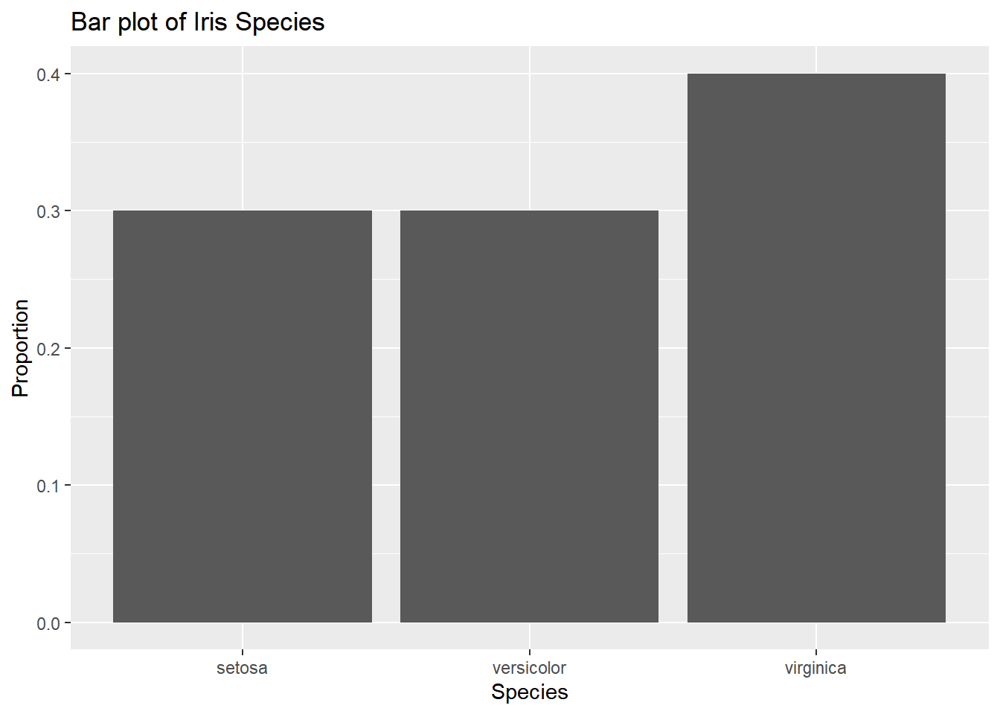
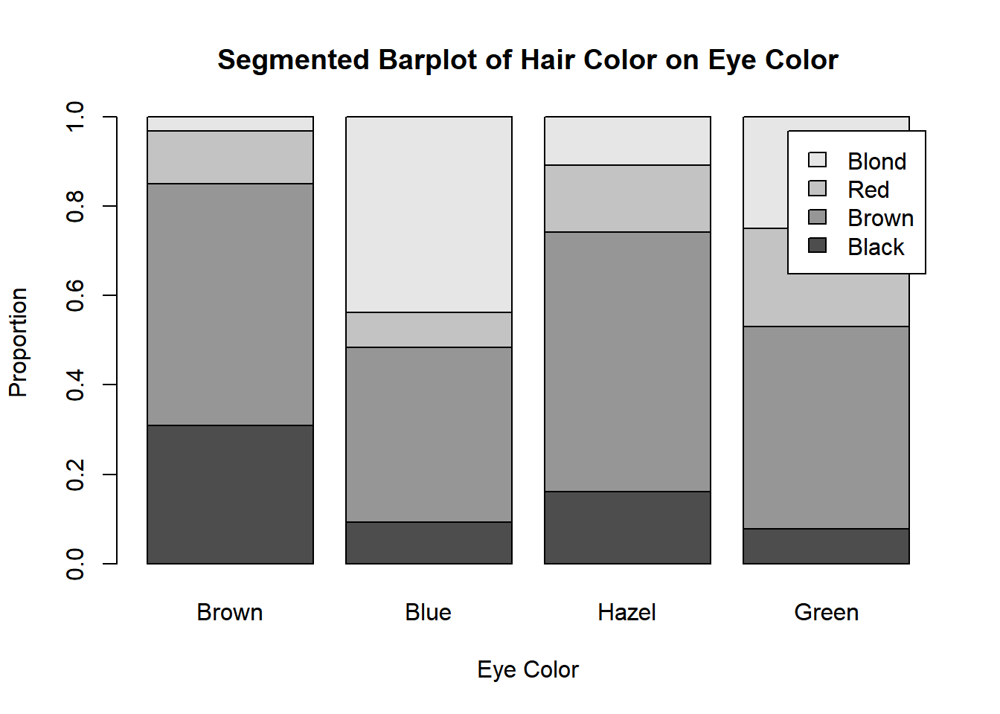
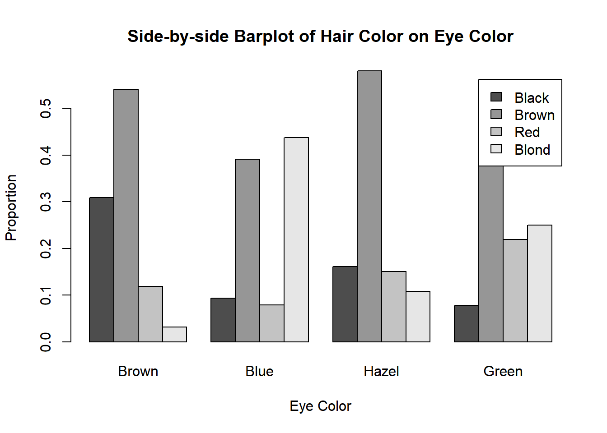
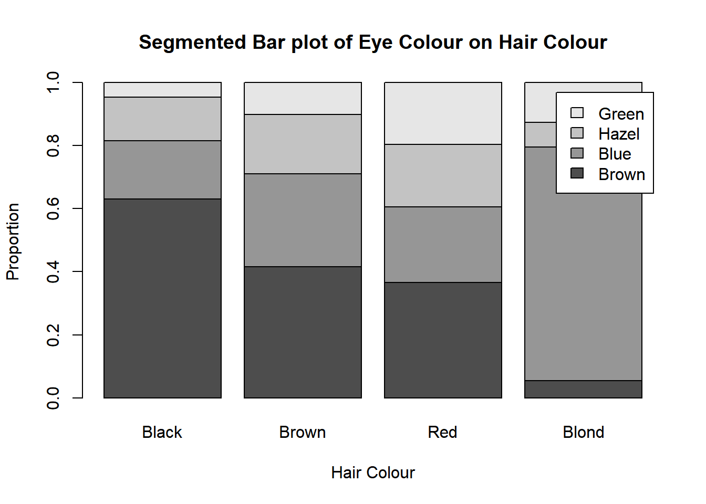
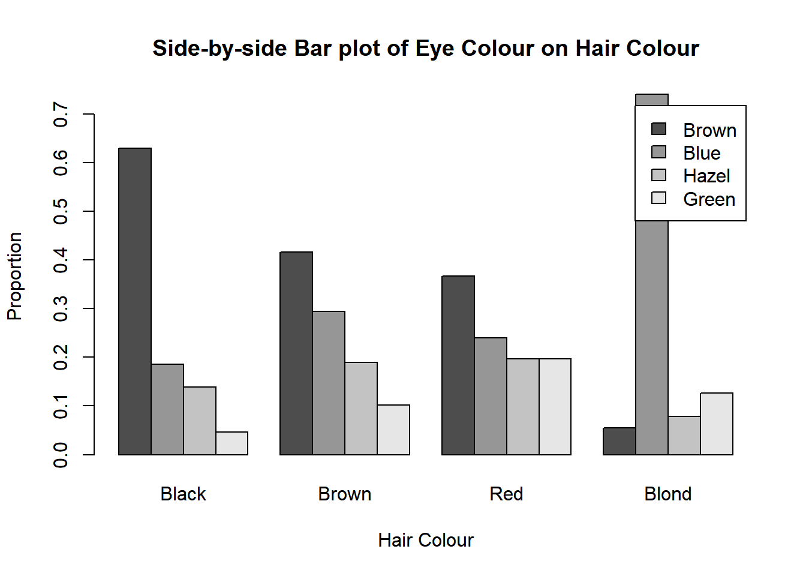

3 Categorical Data Visualizations
3.1 Bar plots
Represent the number or proportion of each unique value. These numbers or proportions are represented with rectangular bars with heights proportional to the values that they represent. You can plot these vertically or horizontally (i.e. categories on the x-axis or categories on the y-axis)
Following data from this table:
- Count up the number of values per category (make a frequency table). Note: This table is missing the total
- Plot the frequencies with them as the height of the bars

If needed (if you need proportions for the y-axis instead, calculate the relative frequency table for the frequency table first). Note: again, this one is missing the total

3.2 Stacked Bar Plots and Side-by-Side Bar Graphs
Stacked bar plots show two categorical variables, one on the x-axis/y-axis, and the other as the legend (colours). We will call the variable on the x-axis as the “groups” and the variable on the legend as the “categories.”
When constructing these bar plots, we first want to determine which variable goes where (your choice or given choice to you). Then you calculate relative frequencies per group
For example, here I have a two-way table detailing the hair and eye colour of some statistics students
So if I want eye colour to be my groups, I would calculate the relative frequencies by column (use the total of the column and divide the whole column by it), so each group/column will add up to 1.
These numbers will be my bar heights. So for the bar(s) representing brown eyes:
black hair will be .3091
brown hair will be .5409
red hair will be 0.1182
blond hair will be 0.0318

Here’s the corresponding side-by-side bar plot. Note that the heights of the bars are the same as the segmented bar graph.

On the other hand, if I want my eye colour to be my groups, I would calculate the relative frequencies by row (use the total of the row and divide the whole row by it), so each group/row will add up to 1.
These numbers will be my bar heights. So for the bar(s) representing black hair:
brown eyes will be 0.6296296
blue eyes will be 0.1851852
hazel eyes will be 0.1388889
green eyes will be 0.0462963


3.3 Mosaic Plots
Mosaic plots are the almost the same as stacked bar plots. The only difference is that the widths of the bars change according to the proportion of points in each group. In a mosaic plot, the x-axis will also measure the proportion of observations/data points within the groupings (i.e. the x-axis reflects the marginal distribution of the variable on the x-axis).
Following the same steps as the side-by-side and stacked bar charts to find the heights, we now add an additional step before plotting.
Find the widths of the bars by finding the marginal distriubtion of the variable on the x-axis (the groups)
- For each group, find the probability of having that trait. So for our previous example, we had this table:
Using our eye colours as the groups (vertical bars), we will find:
\(P(Brown) \approx .3716\)
\(P(Blue) \approx .3632\)
\(P(Hazel) \approx .1571\)
\(P(Green) \approx .1081\)
When we plot our mosaic plot, we do the same thing, except now, we have our bars differ in widths according to the numbers that we just calculated.